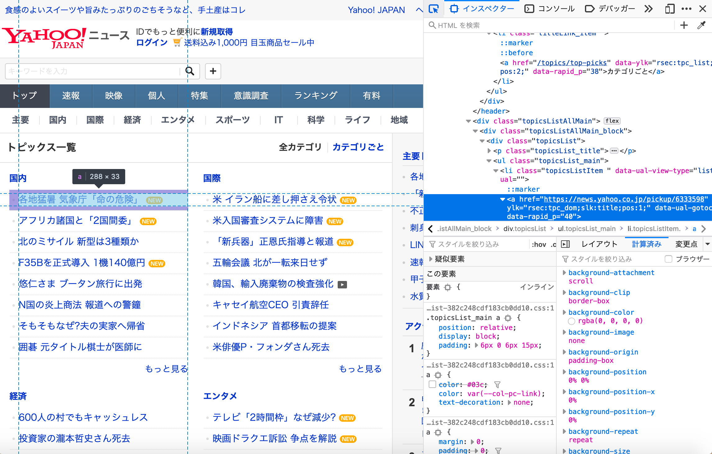
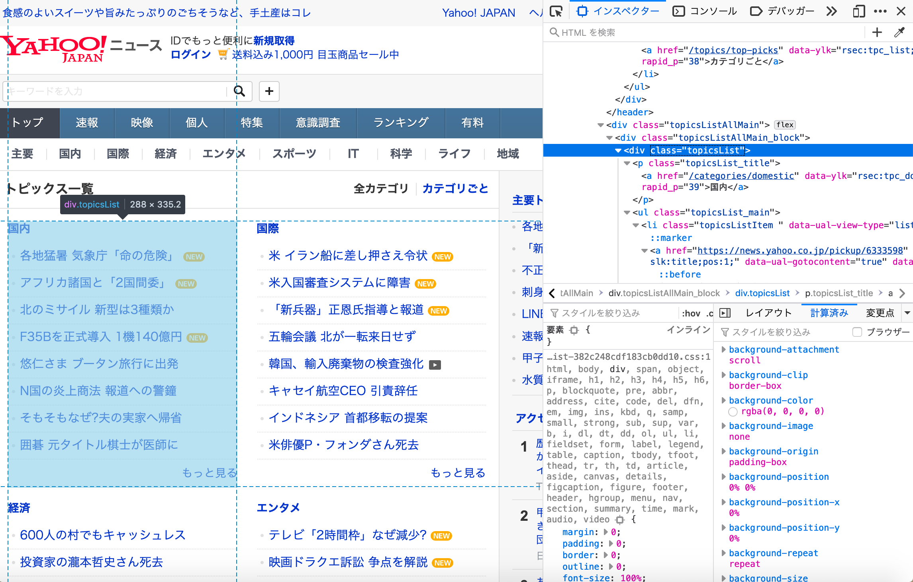

Web スクレイピング入門¶
Python の使い方も学び、Web ページの構造も理解したので、早速 Web スクレイピングをしていきましょう。 まず、このページでは手始めに Yahoo news のトピックス一覧 から、各記事のタイトルを収集することを目指します。
requests¶
まず、python を使って、Web ページのコンテンツをとってみましょう。 これには、 requests というモジュールを使います。 Python にも似たようなものがありますが、 requests の方が使いやすいです。 コンテンツが欲しい Web ページの URL について、 requests.get(URL) とすると、Web サーバーに Web ページのコンテンツを送ってくれという要求をすることができます。
[1]:
import pandas as pd
from bs4 import BeautifulSoup
import requests
url = "https://news.yahoo.co.jp/topics"
response = requests.get(url)
response.status_code
[1]:
200
最後の行は、ステータスコードというものを表していてます。 ステータスコードは Web サーバーへの要求が上手くいったかを判別することができるので、毎回チェックしておきましょう。 200 は、Web サーバーの要求が無事成功したことを示しています。 ステータスコードは 200 以外にも、様々な値を返すので、やりながら学んでいけば良いでしょう。
BeautifulSoup¶
次に、Web ページのコンテンツからデータを取りやすいようにします。 ここでは、BeautifulSoup を用います。 BeautifulSoup は使い方がわかりやすいので、入門としては良いでしょう。
[2]:
bs = BeautifulSoup(response.content, "lxml")
lxml というのは、htmlのパーサーの一つです。 パーサーというのは、HTML を解析して分析しやすくしてくれます。 また、タグの閉じ忘れなどを直してくれます。 BeautifulSoup には 4 つほどのパーサーを使えますが、lxml は使いやすさと早さを兼ね備えているので、これを使います。
HTML の章で解説しましたが、Web ページは様々な要素が入れ子になっています。 したがって、自分の欲しい情報をとるには、その情報が置いてある要素を上手く指定することが大事です。 要素を指定する方法は、CSS のところで解説しました。 それでは、我々の欲しい情報は一体どこに位置しているのでしょうか？
実は、Google Chrome や Firefox などのモダンブラウザには、それを分かりやすくする機能が備わっています。 Web ページを開いて、Ctrl + Shift + I を押すか、右クリックを押してから、検証（インスペクタ）を押してみましょう。 画面が 2 分割され、左側に Web ページ、右側に html が表示されるでしょう。 右側の左上のカーソルのマークをクリックしてから、左側の適当なところを押してみましょう。 すると、そのテキストが html 内のどこにあるかが、右側に表示されます。
この機能を使って、欲しい情報はどこにあるのかを探っていきます。 ここでは、トピックス一覧の内容が欲しいので、その内のどれかを押してみましょう。 一覧の内容は全てリンクが張られているので、 a 要素に含まれていることがわかりました。

BeautifulSoup は select で CSS セレクターを使うことができます。 下の例では a 要素を取ってきています。 select は CSS セレクターで指定した要素をタグごとにリストに含めます。
[3]:
print(len(bs.select('a')))
152
返ってくる要素が多すぎます。 Web ページは多くのところでリンクを貼っているので、a 要素だと制限が緩すぎます。 別の方法を考えましょう。 各トピックの全体を検証してみると、トピック毎に div 要素でくくられていることがわかります。 それでは、div 要素を指定してみましょう。

[4]:
# 表示は省略
# bs.select('div')
先程よりはましですが、まだ余計なものが残っています。 よく見ると、この div 要素には topicsList というクラス名が割り当てられています。 .topicsList として、このクラスを持つ要素を取ってみましょう。
[5]:
topics = bs.select('.topicsList')
topics[0]
[5]:
<div class="topicsList"><p class="topicsList_title"><a data-ylk="rsec:tpc_dom;slk:top;" href="/categories/domestic">国内</a></p><ul class="topicsList_main"><li class="topicsListItem" data-ual="" data-ual-view-type="list"><a data-ual-gotocontent="true" data-ylk="rsec:tpc_dom;slk:title;pos:1;" href="https://news.yahoo.co.jp/pickup/6333598">各地猛暑 気象庁「命の危険」<span aria-label="NEW" class="labelIcon labelIcon-NEW"></span></a></li><li class="topicsListItem" data-ual="" data-ual-view-type="list"><a data-ual-gotocontent="true" data-ylk="rsec:tpc_dom;slk:title;pos:2;" href="https://news.yahoo.co.jp/pickup/6333606">Uターンピーク 各地で混雑<span aria-label="動画" class="labelIcon labelIcon-VIDEO"></span><span aria-label="NEW" class="labelIcon labelIcon-NEW"></span></a></li><li class="topicsListItem" data-ual="" data-ual-view-type="list"><a data-ual-gotocontent="true" data-ylk="rsec:tpc_dom;slk:title;pos:3;" href="https://news.yahoo.co.jp/pickup/6333611">悠仁さまブータン到着 初海外<span aria-label="NEW" class="labelIcon labelIcon-NEW"></span></a></li><li class="topicsListItem" data-ual="" data-ual-view-type="list"><a data-ual-gotocontent="true" data-ylk="rsec:tpc_dom;slk:title;pos:4;" href="https://news.yahoo.co.jp/pickup/6333577">アフリカ諸国と「2国間委」</a></li><li class="topicsListItem" data-ual="" data-ual-view-type="list"><a data-ual-gotocontent="true" data-ylk="rsec:tpc_dom;slk:title;pos:5;" href="https://news.yahoo.co.jp/pickup/6333519">北のミサイル 新型は3種類か</a></li><li class="topicsListItem" data-ual="" data-ual-view-type="list"><a data-ual-gotocontent="true" data-ylk="rsec:tpc_dom;slk:title;pos:6;" href="https://news.yahoo.co.jp/pickup/6333567">F35Bを正式導入 1機140億円</a></li><li class="topicsListItem" data-ual="" data-ual-view-type="list"><a data-ual-gotocontent="true" data-ylk="rsec:tpc_dom;slk:title;pos:7;" href="https://news.yahoo.co.jp/pickup/6333548">N国の炎上商法 報道への警鐘</a></li><li class="topicsListItem" data-ual="" data-ual-view-type="list"><a data-ual-gotocontent="true" data-ylk="rsec:tpc_dom;slk:title;pos:8;" href="https://news.yahoo.co.jp/pickup/6333532">そもそもなぜ?夫の実家へ帰省</a></li></ul><div class="topicsList_button"><p class="topicsList_button_more"><a data-ylk="rsec:tpc_dom;slk:more;" href="/topics/domestic">もっと見る</a></p></div></div>
上手くいきました！各トピックがリストの各要素に入ってます。 それでは、ここからトピック毎に記事名を格納していきましょう。 topicsList_title クラスには、トピックのカテゴリーが入ってます。 各 li 要素（あるいは、topicsListItem クラス）には、各記事が入っています。 要素ごとに分けたら、text メソッドを使って、要素の内容を取り出します。
[6]:
print(topics[0].select('.topicsList_title')[0].text)
print(topics[0].select('li')[0].text)
国内
各地猛暑 気象庁「命の危険」
この作業をループ化して、dict = {トピックのタイトル:[記事A, 記事B]} というように、辞書型にしていきます。
[7]:
news_topics = {}
for topic in topics:
topic_title = topic.select('.topicsList_title')[0].text
news_topics[topic_title] = [news.text for news in topic.select('li')]
[8]:
news_topics['国内']
[8]:
['各地猛暑 気象庁「命の危険」',
'Uターンピーク 各地で混雑',
'悠仁さまブータン到着 初海外',
'アフリカ諸国と「2国間委」',
'北のミサイル 新型は3種類か',
'F35Bを正式導入 1機140億円',
'N国の炎上商法 報道への警鐘',
'そもそもなぜ?夫の実家へ帰省']
[news.text for news in topic.select('li')] はリスト内包表記というものです。 ここでは、li 要素を順に news に格納し、その要素の内容を news.text で取り出し、リストに入れていく処理をしています。
ちなみに、さきほどの処理は次と同じです。
[9]:
# news_list = {}
# for topic in topics:
# topic_title = topic.select('.topicsList_title')[0].text
# news_topics[topic_title] = []
# for news in topic.select('li'):
# news_topics[topic_title].append(news.text)
#
リスト内包表記は、普通にループ文を書くよりもスッキリとして書け、また早く処理することができます。
せっかくなので、pandas の DataFrame に変換しましょう。 dict から DataFrame にするには、from_dict を使います。
[10]:
topics_dt = pd.DataFrame.from_dict(news_topics)
topics_dt
[10]:
| 国内 | 国際 | 経済 | エンタメ | スポーツ | IT | 科学 | 地域 | |
|---|---|---|---|---|---|---|---|---|
| 0 | 各地猛暑 気象庁「命の危険」 | 米 イラン船に差し押さえ令状 | アルゼンチン、国債格下げ | 弘中アナ ニッポン放送で特番 | 速報 仙台育英vs.敦賀気比 | 初期キズナアイ 活動休止せず | 作り置きのお茶 賞味期限は | 池袋遺族 前日に最後の電話 |
| 1 | Uターンピーク 各地で混雑 | 米入国審査システムに障害 | 内定辞退予測 YKKなども購入 | 「中学生日記」ラジオで復活 | 星稜 タイブレーク制し8強 | LINEグループ しんどいときは | 猫アレルギー減 ワクチン開発 | 不正送金 容疑の大学生を逮捕 |
| 2 | 悠仁さまブータン到着 初海外 | 「新兵器」正恩氏指導と報道 | 調理が簡単 冷凍野菜の輸入増 | テレビ「2時間枠」なぜ減少? | 奥川 最速154キロ&圧巻23K | 7pay問題クオカード配布 なぜ | ヒマワリ 太陽追うのは咲く前 | あおり殴打 43歳男を指名手配 |
| 3 | アフリカ諸国と「2国間委」 | 五輪会議 北が一転来日せず | 600人の村でもキャッシュレス | 映画ドラクエ訴訟 争点を解説 | 甲子園応援「Gフレア」 躍進 | Apple23日にHomePod日本発売 | 百日ぜき流行 1万人超の背景 | 仙台市選管 ミスが「恒例化」 |
| 4 | 北のミサイル 新型は3種類か | 孤立深まる 正念場の文外交 | 顔ハメ聖地に?タワレコの狙い | 浜崎あゆみ小説 来春連ドラに | 大坂 全米前のけがに「嫌気」 | 大手3社 災害用伝言板を提供 | 160cm巨大ペンギン 化石発見 | 不自由展中止 検証委が初会合 |
| 5 | F35Bを正式導入 1機140億円 | キャセイ航空CEO 引責辞任 | サンキューハザード 違反恐れ | 吉本ではないサンド 増す勢い | 水質悪化 W杯スイムを中止 | 楽天 携帯基地局の整備に遅れ | 原爆小頭症 家族も苦難の人生 | 波にさらわれた11歳 遺体発見 |
| 6 | N国の炎上商法 報道への警鐘 | インドネシア 首都移転の提案 | ガンダム最初は1年で打ち切り | HGら6人 関係者に謝罪行脚 | 錦織破った西岡 食中毒で棄権 | 京都の五山送り火 中止は誤解 | 台風が海吸い上げ 危険な高潮 | プール事故 浮く遊具の危険性 |
| 7 | そもそもなぜ?夫の実家へ帰省 | 米俳優P・フォンダさん死去 | 刺身に生野菜 常識超える駅弁 | 吉本興業の寄付 NPOが拒否 | 渋野 お菓子「タラタラ」封印 | 第一生命 スマホで保険加入 | 映像 ゾウが豆腐を鼻でつかむ | 赤字に負けない 猫駅長相づち |